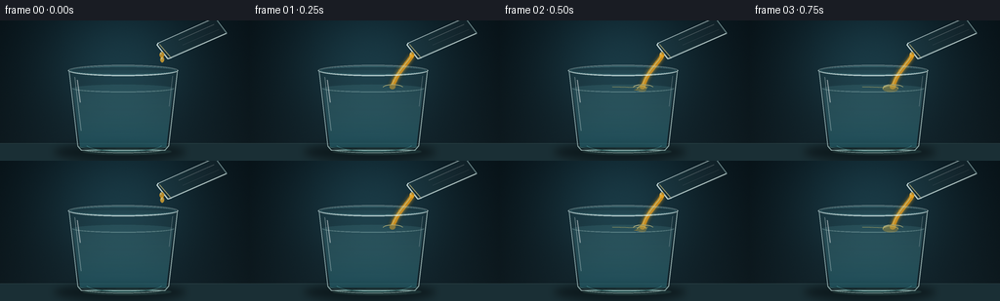
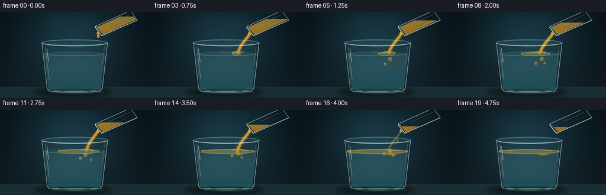
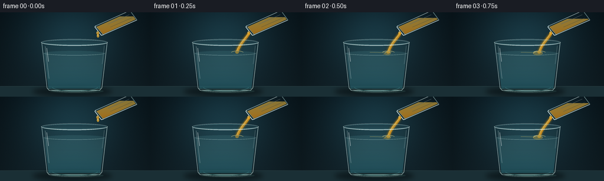
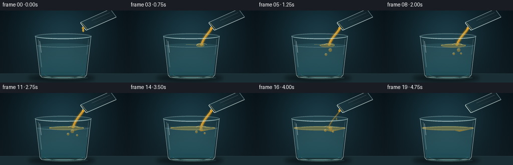
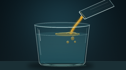

CODING AGENTS AS PIXEL WORLD MODELS
traex/GPT-5.6-Sol · phygen_136
点击播放 · 原生 RGB 像素
逐轮保存的候选
回放视频、检查图与代码变化。
每份候选均可单独播放。实际图片检查记录在下方工具轨迹中。
候选 01播放与检查图
点击播放 · 原生 RGB 像素


展开代码变化
--- 上一保存版本
+++ 本次保存版本
@@ -0,0 +1,219 @@
+from pathlib import Path
+import math
+import numpy as np
+from PIL import Image, ImageDraw, ImageFilter
+import artifact_io
+
+# Procedural, text-to-video illustration of oil being poured into water.
+W, H, N, S = 256, 144, 20, 4
+OUT = Path(__file__).resolve().parent
+rng = np.random.default_rng(136)
+
+def sc(v): return int(round(v*S))
+def pts(seq): return [(sc(x), sc(y)) for x,y in seq]
+def ellipse(box): return tuple(sc(v) for v in box)
+
+def rgba_layer(): return Image.new('RGBA', (W*S,H*S), (0,0,0,0))
+
+def composite_gradient(im, mask, top, bottom, y0=0, y1=144):
+ """Composite a vertical RGBA gradient through an L-mode mask."""
+ yy = np.arange(H*S)[:,None]
+ a = np.clip((yy-y0*S)/max(1,(y1-y0)*S), 0, 1)
+ arr = np.zeros((H*S,W*S,4), np.uint8)
+ for c in range(4):
+ arr[:,:,c] = np.round(top[c]*(1-a) + bottom[c]*a).astype(np.uint8)
+ layer = Image.fromarray(arr, 'RGBA')
+ layer.putalpha(Image.fromarray((np.asarray(mask,dtype=np.float32)*(arr[:,:,3]/255.0)).astype(np.uint8)))
+ im.alpha_composite(layer)
+
+def bezier(p0,p1,p2,p3,n=30):
+ out=[]
+ for t in np.linspace(0,1,n):
+ u=1-t
+ out.append((sc(u**3*p0[0]+3*u*u*t*p1[0]+3*u*t*t*p2[0]+t**3*p3[0]),
+ sc(u**3*p0[1]+3*u*u*t*p1[1]+3*u*t*t*p2[1]+t**3*p3[1])))
+ return out
+
+def make_background():
+ # Dark blue-green studio gradient with a warm light behind the action.
+ yy,xx=np.mgrid[0:H*S,0:W*S]
+ x=xx/(W*S); y=yy/(H*S)
+ glow=np.exp(-(((x-.48)/.45)**2+((y-.30)/.65)**2)*2.0)
+ base=np.zeros((H*S,W*S,3),np.float32)
+ base[:,:,0]=10+13*glow+8*y
+ base[:,:,1]=24+30*glow+10*y
+ base[:,:,2]=31+34*glow+10*y
+ # faint vertical studio falloff and very fine photographic grain
+ vign=np.clip(1-.30*((x-.5)/.55)**2, .70,1)
+ base*=vign[:,:,None]
+ noise=rng.normal(0,.7,(H*S,W*S,1))
+ base=np.clip(base+noise,0,255).astype(np.uint8)
+ return Image.fromarray(base,'RGB').convert('RGBA')
+
+BG=make_background()
+
+def render(frame):
+ t=frame/(N-1)
+ im=BG.copy()
+ # polished table begins at 127, softly lit
+ table=rgba_layer(); d=ImageDraw.Draw(table)
+ d.rectangle((0,sc(126),sc(W),sc(H)), fill=(26,47,53,255))
+ d.line((0,sc(126),sc(W),sc(126)), fill=(111,150,147,80), width=sc(.6))
+ # soft receiver shadow and source reflection
+ sh=rgba_layer(); sd=ImageDraw.Draw(sh)
+ sd.ellipse(ellipse((55,127,190,143)),fill=(0,4,7,130))
+ sd.ellipse(ellipse((74,130,180,138)),fill=(1,8,9,145))
+ sh=sh.filter(ImageFilter.GaussianBlur(sc(4)))
+ im.alpha_composite(table); im.alpha_composite(sh)
+
+ # Main glass interior polygon.
+ inner_poly=pts([(72.5,51),(179.5,51),(170,131),(82,131)])
+ glass_tint=rgba_layer(); gm=Image.new('L',(W*S,H*S),0); gmd=ImageDraw.Draw(gm)
+ gmd.polygon(inner_poly,fill=255)
+ composite_gradient(glass_tint,gm,(98,190,196,12),(112,194,199,28),45,135)
+ im.alpha_composite(glass_tint)
+
+ # Water inside tumbler, with clear blue-gray depth and curved surface.
+ wm=Image.new('L',(W*S,H*S),0); wd=ImageDraw.Draw(wm)
+ wd.polygon(pts([(74,69),(177.5,69),(170,130),(82,130)]),fill=225)
+ wd.ellipse(ellipse((74,65.7,177.5,73.5)),fill=225)
+ water=rgba_layer()
+ composite_gradient(water,wm,(112,193,200,34),(32,116,134,105),66,132)
+ # submerged horizontal light bands
+ wdraw=ImageDraw.Draw(water)
+ wdraw.arc(ellipse((74,65.7,178,73.6)),0,180,fill=(207,249,244,105),width=sc(.7))
+ wdraw.arc(ellipse((81,124,171,134)),0,180,fill=(159,225,218,50),width=sc(1))
+ im.alpha_composite(water)
+
+ # The accumulating oil floats as an increasingly broad golden layer.
+ # It begins near the point of impact and fans across the water surface.
+ pour_on = frame <= 15
+ amount=np.clip((frame-1)/15,0,1)
+ if amount>0:
+ oil=rgba_layer(); od=ImageDraw.Draw(oil)
+ left=145-70*amount; right=148+29*amount
+ thick=2.0+4.8*amount
+ ripple=0.7*math.sin(frame*.9)
+ poly=[(left,68.3),(141,67.3+ripple),(147,69.0),(right,68.4),
+ (right-1,69.3+thick*.35),(149,70.1+thick),(137,69.5+thick*.75),(left+1,69.4+thick*.3)]
+ od.polygon(pts(poly),fill=(230,164,32,150))
+ od.ellipse(ellipse((left,66.8,right,72.0+thick*.45)),fill=(236,176,42,78))
+ od.arc(ellipse((left,66.8,right,72.0+thick*.45)),180,358,fill=(255,229,125,175),width=sc(.8))
+ # bright honey edge where oil meets water
+ od.line(pts([(left+2,68.4),(115,68.0),(139,68.8),(151,68.4),(right-2,68.6)]),fill=(255,218,102,130),width=sc(.55))
+ im.alpha_composite(oil)
+
+ # A few displaced oil globules beneath the surface, which rise again.
+ drops=rgba_layer(); dd=ImageDraw.Draw(drops)
+ if 4 <= frame <= 18:
+ age=frame-4
+ blobs=[(146+2*math.sin(age*.6), 79-max(0,age-5)*1.15, 3.4),
+ (137+1.5*math.sin(age*.45+1), 88-max(0,age-3)*1.45, 2.5)]
+ if frame>=7: blobs.append((153+math.sin(age),86-max(0,age-6)*1.4,2.0))
+ for j,(x,y,r) in enumerate(blobs):
+ if y > 70:
+ dd.ellipse(ellipse((x-r,y-r,x+r,y+r)), fill=(225,155,28,105))
+ dd.arc(ellipse((x-r,y-r,x+r,y+r)),190,330,fill=(255,232,145,170),width=sc(.6))
+ dd.ellipse(ellipse((x-r*.4,y-r*.55,x+r*.05,y-r*.1)),fill=(255,245,187,105))
+ im.alpha_composite(drops)
+
+ # Stream, behind the pouring glass but in front of receiver.
+ stream=rgba_layer()
+ if frame <= 17:
+ if frame==0:
+ # First bead has just left the lip.
+ dd=ImageDraw.Draw(stream)
+ dd.ellipse(ellipse((164,37,168,43)),fill=(239,176,47,190))
+ dd.ellipse(ellipse((165,37.5,166.2,40)),fill=(255,239,164,190))
+ else:
+ strength=1.0 if frame<=14 else (18-frame)/4
+ ximpact=145+1.1*math.sin(frame*.65)
+ curve=bezier((166,35),(163+math.sin(frame*.4),43),(151,51),(ximpact,68),38)
+ glow=rgba_layer(); gd=ImageDraw.Draw(glow)
+ gd.line(curve,fill=(241,174,32,int(90*strength)),width=sc(7.2*strength+1.5),joint='curve')
+ glow=glow.filter(ImageFilter.GaussianBlur(sc(1.8)))
+ stream.alpha_composite(glow)
+ st=ImageDraw.Draw(stream)
+ width=max(sc(1),sc(4.5*strength))
+ st.line(curve,fill=(226,151,24,int(220*strength)),width=width,joint='curve')
+ st.line([(x-sc(.8),y) for x,y in curve],fill=(255,231,132,int(190*strength)),width=max(1,sc(.8*strength)),joint='curve')
+ # tapered drop/impact dimple
+ st.ellipse(ellipse((ximpact-3,65.5,ximpact+3,70.5)),fill=(235,169,37,int(130*strength)))
+ st.arc(ellipse((ximpact-10,65.5,ximpact+11,72.2)),190,348,fill=(255,226,132,int(155*strength)),width=sc(.7))
+ if frame>=15:
+ # stream breaking into a narrow tail
+ st.ellipse(ellipse((158,47+2*(frame-15),161,52+2*(frame-15))),fill=(241,177,42,int(170*strength)))
+ im.alpha_composite(stream)
+
+ # Main glass structure, crisp double rim and curved reflective walls.
+ glass=rgba_layer(); gd=ImageDraw.Draw(glass)
+ gd.ellipse(ellipse((69.5,45.4,182.5,57.0)),fill=(126,201,205,12),outline=(218,247,244,125),width=sc(1.0))
+ gd.ellipse(ellipse((72,47.1,180,55.4)),outline=(126,196,201,92),width=sc(.7))
+ # rear rim dimmer, front rim bright
+ gd.arc(ellipse((69.5,45.4,182.5,57)),180,360,fill=(241,255,251,75),width=sc(.7))
+ gd.arc(ellipse((69.5,45.4,182.5,57)),0,180,fill=(236,255,252,185),width=sc(1.15))
+ gd.line(pts([(70.5,51),(79.5,129)]),fill=(205,239,238,145),width=sc(1.05))
+ gd.line(pts([(181.5,51),(172.5,129)]),fill=(217,244,239,155),width=sc(1.05))
+ gd.line(pts([(79.5,129),(83,133),(169,133),(172.5,129)]),fill=(202,239,235,160),width=sc(1.1),joint='curve')
+ gd.arc(ellipse((82,127.2,170,136)),0,180,fill=(227,250,246,115),width=sc(.85))
+ # glass highlights
+ gd.line(pts([(76.5,58),(83,113)]),fill=(244,255,252,90),width=sc(.7))
+ gd.line(pts([(79,61),(82,84)]),fill=(255,255,255,125),width=sc(1.0))
+ gd.line(pts([(176.5,57),(173,88)]),fill=(255,255,255,78),width=sc(.55))
+ gd.arc(ellipse((88,120,166,135)),8,170,fill=(113,214,212,60),width=sc(1.2))
+ im.alpha_composite(glass)
+
+ # Refracted caustic light along table and glass foot.
+ ca=rgba_layer(); cd=ImageDraw.Draw(ca)
+ cd.ellipse(ellipse((84,131,176,138)),fill=(113,221,206,24),outline=(184,241,226,60),width=sc(.7))
+ cd.line(pts([(91,134),(161,136)]),fill=(205,255,236,60),width=sc(.6))
+ ca=ca.filter(ImageFilter.GaussianBlur(sc(.7)))
+ im.alpha_composite(ca)
+
+ # Tilted clear source glass. Its long axis points up-right; its open lip is lower-left.
+ vessel=rgba_layer()
+ inner=Image.new('L',(W*S,H*S),0); idr=ImageDraw.Draw(inner)
+ bodypoly=pts([(164,24.5),(175,37),(230,12),(220,-1)])
+ idr.polygon(bodypoly,fill=255)
+ # remaining oil is clipped by a horizontal free surface; it visibly drains away
+ level=7 + 22*np.clip(frame/17,0,1)
+ oilmask=Image.new('L',(W*S,H*S),0)
+ oilmask.paste(inner)
+ clip=Image.new('L',(W*S,H*S),0); cld=ImageDraw.Draw(clip)
+ cld.rectangle((0,sc(level),sc(W),sc(H)),fill=255)
+ oilmask=Image.fromarray(np.minimum(np.asarray(oilmask),np.asarray(clip)).astype(np.uint8))
+ composite_gradient(vessel,oilmask,(255,206,76,125),(194,117,9,205),5,40)
+ vd=ImageDraw.Draw(vessel)
+ # vessel tint and outline
+ vd.polygon(pts([(161.5,22.7),(175.5,39),(233,13),(220,-3)]),fill=(153,220,220,12))
+ vd.line(pts([(162,23),(220,-3)]),fill=(234,255,252,145),width=sc(1.1))
+ vd.line(pts([(175,38),(232,13)]),fill=(230,251,247,170),width=sc(1.2))
+ vd.line(pts([(220,-3),(232,13)]),fill=(193,235,232,120),width=sc(1))
+ # open elliptical rim shown as a curved/lenticular mouth
+ vd.line(pts([(162,23),(160.7,25),(171.8,39.2),(175.5,38)]),fill=(239,255,251,195),width=sc(1.15),joint='curve')
+ vd.line(pts([(163.2,24.5),(174.3,37.2)]),fill=(255,231,142,145 if frame<17 else 55),width=sc(.8))
+ vd.line(pts([(183,20),(219,4)]),fill=(255,255,255,75),width=sc(.65))
+ vd.line(pts([(187,25),(224,9)]),fill=(255,255,255,42),width=sc(.5))
+ # small oil bead clinging to the pouring lip
+ if frame<18:
+ vd.ellipse(ellipse((163.2,32.2,168,38)),fill=(236,166,34,190))
+ vd.ellipse(ellipse((164,32.5,165.3,35)),fill=(255,239,164,170))
+ im.alpha_composite(vessel)
+
+ # tiny surface sparkle, synchronized to gentle ripples
+ sp=rgba_layer(); spd=ImageDraw.Draw(sp)
+ if 2 <= frame <= 16:
+ x=143+math.sin(frame*.7)
+ spd.line((sc(x-7),sc(67),sc(x-2),sc(65.5)),fill=(255,245,191,150),width=sc(.6))
+ spd.line((sc(x+3),sc(66),sc(x+8),sc(67.2)),fill=(255,244,189,115),width=sc(.5))
+ im.alpha_composite(sp)
+
+ return np.asarray(im.convert('RGB').resize((W,H),Image.Resampling.LANCZOS),dtype=np.uint8)
+
+def main():
+ frames=np.stack([render(i) for i in range(N)],axis=0)
+ artifact_io.save(frames,OUT)
+ print('saved',frames.shape,frames.dtype)
+
+if __name__=='__main__':
+ main()
候选 02播放与检查图
点击播放 · 原生 RGB 像素


展开代码变化
--- 上一保存版本
+++ 本次保存版本
@@ -185,7 +185,6 @@
composite_gradient(vessel,oilmask,(255,206,76,125),(194,117,9,205),5,40)
vd=ImageDraw.Draw(vessel)
# vessel tint and outline
- vd.polygon(pts([(161.5,22.7),(175.5,39),(233,13),(220,-3)]),fill=(153,220,220,12))
vd.line(pts([(162,23),(220,-3)]),fill=(234,255,252,145),width=sc(1.1))
vd.line(pts([(175,38),(232,13)]),fill=(230,251,247,170),width=sc(1.2))
vd.line(pts([(220,-3),(232,13)]),fill=(193,235,232,120),width=sc(1))
可观测工具轨迹
实际执行的命令与返回图片。
命令 1exit 0
/bin/bash -lc "cat prompt.txt && printf '\\n---RULES---\\n' && cat GENERATION_RULES.md && printf '\\n---SPEC---\\n' && cat task_spec.json"
命令 2exit 0
/bin/bash -lc "find . -maxdepth 2 -type f -printf '%p\\n' | sort | head -200"
命令 3exit 0
/bin/bash -lc "sed -n '1,240p' artifact_io.py"
命令 4exit 0
/bin/bash -lc "cat > generate.py <<'PY'
from pathlib import Path
import math
import numpy as np
from PIL import Image, ImageDraw, ImageFilter
import artifact_io
# Procedural, text-to-video illustration of oil being poured into water.
W, H, N, S = 256, 144, 20, 4
OUT = Path(__file__).resolve().parent
rng = np.random.default_rng(136)
def sc(v): return int(round(v*S))
def pts(seq): return [(sc(x), sc(y)) for x,y in seq]
def ellipse(box): return tuple(sc(v) for v in box)
def rgba_layer(): return Image.new('RGBA', (W*S,H*S), (0,0,0,0))
def composite_gradient(im, mask, top, bottom, y0=0, y1=144):
\"\"\"Composite a vertical RGBA gradient through an L-mode mask.\"\"\"
yy = np.arange(H*S)[:,None]
a = np.clip((yy-y0*S)/max(1,(y1-y0)*S), 0, 1)
arr = np.zeros((H*S,W*S,4), np.uint8)
for c in range(4):
arr[:,:,c] = np.round(top[c]*(1-a) + bottom[c]*a).astype(np.uint8)
layer = Image.fromarray(arr, 'RGBA')
layer.putalpha(Image.fromarray((np.asarray(mask,dtype=np.float32)*(arr[:,:,3]/255.0)).astype(np.uint8)))
im.alpha_composite(layer)
def bezier(p0,p1,p2,p3,n=30):
out=[]
for t in np.linspace(0,1,n):
u=1-t
out.append((sc(u**3*p0[0]+3*u*u*t*p1[0]+3*u*t*t*p2[0]+t**3*p3[0]),
sc(u**3*p0[1]+3*u*u*t*p1[1]+3*u*t*t*p2[1]+t**3*p3[1])))
return out
def make_background():
# Dark blue-green studio gradient with a warm light behind the action.
yy,xx=np.mgrid[0:H*S,0:W*S]
x=xx/(W*S); y=yy/(H*S)
glow=np.exp(-(((x-.48)/.45)**2+((y-.30)/.65)**2)*2.0)
base=np.zeros((H*S,W*S,3),np.float32)
base[:,:,0]=10+13*glow+8*y
base[:,:,1]=24+30*glow+10*y
base[:,:,2]=31+34*glow+10*y
# faint vertical studio falloff and very fine photographic grain
vign=np.clip(1-.30*((x-.5)/.55)**2, .70,1)
base*=vign[:,:,None]
noise=rng.normal(0,.7,(H*S,W*S,1))
base=np.clip(base+noise,0,255).astype(np.uint8)
return Image.fromarray(base,'RGB').convert('RGBA')
BG=make_background()
def render(frame):
t=frame/(N-1)
im=BG.copy()
# polished table begins at 127, softly lit
table=rgba_layer(); d=ImageDraw.Draw(table)
d.rectangle((0,sc(126),sc(W),sc(H)), fill=(26,47,53,255))
d.line((0,sc(126),sc(W),sc(126)), fill=(111,150,147,80), width=sc(.6))
# soft receiver shadow and source reflection
sh=rgba_layer(); sd=ImageDraw.Draw(sh)
sd.ellipse(ellipse((55,127,190,143)),fill=(0,4,7,130))
sd.ellipse(ellipse((74,130,180,138)),fill=(1,8,9,145))
sh=sh.filter(ImageFilter.GaussianBlur(sc(4)))
im.alpha_composite(table); im.alpha_composite(sh)
# Main glass interior polygon.
inner_poly=pts([(72.5,51),(179.5,51),(170,131),(82,131)])
glass_tint=rgba_layer(); gm=Image.new('L',(W*S,H*S),0); gmd=ImageDraw.Draw(gm)
gmd.polygon(inner_poly,fill=255)
composite_gradient(glass_tint,gm,(98,190,196,12),(112,194,199,28),45,135)
im.alpha_composite(glass_tint)
# Water inside tumbler, with clear blue-gray depth and curved surface.
wm=Image.new('L',(W*S,H*S),0); wd=ImageDraw.Draw(wm)
wd.polygon(pts([(74,69),(177.5,69),(170,130),(82,130)]),fill=225)
wd.ellipse(ellipse((74,65.7,177.5,73.5)),fill=225)
water=rgba_layer()
composite_gradient(water,wm,(112,193,200,34),(32,116,134,105),66,132)
# submerged horizontal light bands
wdraw=ImageDraw.Draw(water)
wdraw.arc(ellipse((74,65.7,178,73.6)),0,180,fill=(207,249,244,105),width=sc(.7))
wdraw.arc(ellipse((81,124,171,134)),0,180,fill=(159,225,218,50),width=sc(1))
im.alpha_composite(water)
# The accumulating oil floats as an increasingly broad golden layer.
# It begins near the point of impact and fans across the water surface.
pour_on = frame <= 15
amount=np.clip((frame-1)/15,0,1)
if amount>0:
oil=rgba_layer(); od=ImageDraw.Draw(oil)
left=145-70*amount; right=148+29*amount
thick=2.0+4.8*amount
ripple=0.7*math.sin(frame*.9)
poly=[(left,68.3),(141,67.3+ripple),(147,69.0),(right,68.4),
(right-1,69.3+thick*.35),(149,70.1+thick),(137,69.5+thick*.75),(left+1,69.4+thick*.3)]
od.polygon(pts(poly),fill=(230,164,32,150))
od.ellipse(ellipse((left,66.8,right,72.0+thick*.45)),fill=(236,176,42,78))
od.arc(ellipse((left,66.8,right,72.0+thick*.45)),180,358,fill=(255,229,125,175),width=sc(.8))
# bright honey edge where oil meets water
od.line(pts([(left+2,68.4),(115,68.0),(139,68.8),(151,68.4),(right-2,68.6)]),fill=(255,218,102,130),width=sc(.55))
im.alpha_composite(oil)
# A few displaced oil globules beneath the surface, which rise again.
drops=rgba_layer(); dd=ImageDraw.Draw(drops)
if 4 <= frame <= 18:
age=frame-4
blobs=[(146+2*math.sin(age*.6), 79-max(0,age-5)*1.15, 3.4),
(137+1.5*math.sin(age*.45+1), 88-max(0,age-3)*1.45, 2.5)]
if frame>=7: blobs.append((153+math.sin(age),86-max(0,age-6)*1.4,2.0))
for j,(x,y,r) in enumerate(blobs):
if y > 70:
dd.ellipse(ellipse((x-r,y-r,x+r,y+r)), fill=(225,155,28,105))
dd.arc(ellipse((x-r,y-r,x+r,y+r)),190,330,fill=(255,232,145,170),width=sc(.6))
dd.ellipse(ellipse((x-r*.4,y-r*.55,x+r*.05,y-r*.1)),fill=(255,245,187,105))
im.alpha_composite(drops)
# Stream, behind the pouring glass but in front of receiver.
stream=rgba_layer()
if frame <= 17:
if frame==0:
# First bead has just left the lip.
dd=ImageDraw.Draw(stream)
dd.ellipse(ellipse((164,37,168,43)),fill=(239,176,47,190))
dd.ellipse(ellipse((165,37.5,166.2,40)),fill=(255,239,164,190))
else:
strength=1.0 if frame<=14 else (18-frame)/4
ximpact=145+1.1*math.sin(frame*.65)
curve=bezier((166,35),(163+math.sin(frame*.4),43),(151,51),(ximpact,68),38)
glow=rgba_layer(); gd=ImageDraw.Draw(glow)
gd.line(curve,fill=(241,174,32,int(90*strength)),width=sc(7.2*strength+1.5),joint='curve')
glow=glow.filter(ImageFilter.GaussianBlur(sc(1.8)))
stream.alpha_composite(glow)
st=ImageDraw.Draw(stream)
width=max(sc(1),sc(4.5*strength))
st.line(curve,fill=(226,151,24,int(220*strength)),width=width,joint='curve')
st.line([(x-sc(.8),y) for x,y in curve],fill=(255,231,132,int(190*strength)),width=max(1,sc(.8*strength)),joint='curve')
# tapered drop/impact dimple
st.ellipse(ellipse((ximpact-3,65.5,ximpact+3,70.5)),fill=(235,169,37,int(130*strength)))
st.arc(ellipse((ximpact-10,65.5,ximpact+11,72.2)),190,348,fill=(255,226,132,int(155*strength)),width=sc(.7))
if frame>=15:
# stream breaking into a narrow tail
st.ellipse(ellipse((158,47+2*(frame-15),161,52+2*(frame-15))),fill=(241,177,42,int(170*strength)))
im.alpha_composite(stream)
# Main glass structure, crisp double rim and curved reflective walls.
glass=rgba_layer(); gd=ImageDraw.Draw(glass)
gd.ellipse(ellipse((69.5,45.4,182.5,57.0)),fill=(126,201,205,12),outline=(218,247,244,125),width=sc(1.0))
gd.ellipse(ellipse((72,47.1,180,55.4)),outline=(126,196,201,92),width=sc(.7))
# rear rim dimmer, front rim bright
gd.arc(ellipse((69.5,45.4,182.5,57)),180,360,fill=(241,255,251,75),width=sc(.7))
gd.arc(ellipse((69.5,45.4,182.5,57)),0,180,fill=(236,255,252,185),width=sc(1.15))
gd.line(pts([(70.5,51),(79.5,129)]),fill=(205,239,238,145),width=sc(1.05))
gd.line(pts([(181.5,51),(172.5,129)]),fill=(217,244,239,155),width=sc(1.05))
gd.line(pts([(79.5,129),(83,133),(169,133),(172.5,129)]),fill=(202,239,235,160),width=sc(1.1),joint='curve')
gd.arc(ellipse((82,127.2,170,136)),0,180,fill=(227,250,246,115),width=sc(.85))
# glass highlights
gd.line(pts([(76.5,58),(83,113)]),fill=(244,255,252,90),width=sc(.7))
gd.line(pts([(79,61),(82,84)]),fill=(255,255,255,125),width=sc(1.0))
gd.line(pts([(176.5,57),(173,88)]),fill=(255,255,255,78),width=sc(.55))
gd.arc(ellipse((88,120,166,135)),8,170,fill=(113,214,212,60),width=sc(1.2))
im.alpha_composite(glass)
# Refracted caustic light along table and glass foot.
ca=rgba_layer(); cd=ImageDraw.Draw(ca)
cd.ellipse(ellipse((84,131,176,138)),fill=(113,221,206,24),outline=(184,241,226,60),width=sc(.7))
cd.line(pts([(91,134),(161,136)]),fill=(205,255,236,60),width=sc(.6))
ca=ca.filter(ImageFilter.GaussianBlur(sc(.7)))
im.alpha_composite(ca)
# Tilted clear source glass. Its long axis points up-right; its open lip is lower-left.
vessel=rgba_layer()
inner=Image.new('L',(W*S,H*S),0); idr=ImageDraw.Draw(inner)
bodypoly=pts([(164,24.5),(175,37),(230,12),(220,-1)])
idr.polygon(bodypoly,fill=255)
# remaining oil is clipped by a horizontal free surface; it visibly drains away
level=7 + 22*np.clip(frame/17,0,1)
oilmask=Image.new('L',(W*S,H*S),0)
oilmask.paste(inner)
clip=Image.new('L',(W*S,H*S),0); cld=ImageDraw.Draw(clip)
cld.rectangle((0,sc(level),sc(W),sc(H)),fill=255)
oilmask=Image.fromarray(np.minimum(np.asarray(oilmask),np.asarray(clip)).astype(np.uint8))
composite_gradient(vessel,oilmask,(255,206,76,125),(194,117,9,205),5,40)
vd=ImageDraw.Draw(vessel)
# vessel tint and outline
vd.polygon(pts([(161.5,22.7),(175.5,39),(233,13),(220,-3)]),fill=(153,220,220,12))
vd.line(pts([(162,23),(220,-3)]),fill=(234,255,252,145),width=sc(1.1))
vd.line(pts([(175,38),(232,13)]),fill=(230,251,247,170),width=sc(1.2))
vd.line(pts([(220,-3),(232,13)]),fill=(193,235,232,120),width=sc(1))
# open elliptical rim shown as a curved/lenticular mouth
vd.line(pts([(162,23),(160.7,25),(171.8,39.2),(175.5,38)]),fill=(239,255,251,195),width=sc(1.15),joint='curve')
vd.line(pts([(163.2,24.5),(174.3,37.2)]),fill=(255,231,142,145 if frame<17 else 55),width=sc(.8))
vd.line(pts([(183,20),(219,4)]),fill=(255,255,255,75),width=sc(.65))
vd.line(pts([(187,25),(224,9)]),fill=(255,255,255,42),width=sc(.5))
# small oil bead clinging to the pouring lip
if frame<18:
vd.ellipse(ellipse((163.2,32.2,168,38)),fill=(236,166,34,190))
vd.ellipse(ellipse((164,32.5,165.3,35)),fill=(255,239,164,170))
im.alpha_composite(vessel)
# tiny surface sparkle, synchronized to gentle ripples
sp=rgba_layer(); spd=ImageDraw.Draw(sp)
if 2 <= frame <= 16:
x=143+math.sin(frame*.7)
spd.line((sc(x-7),sc(67),sc(x-2),sc(65.5)),fill=(255,245,191,150),width=sc(.6))
spd.line((sc(x+3),sc(66),sc(x+8),sc(67.2)),fill=(255,244,189,115),width=sc(.5))
im.alpha_composite(sp)
return np.asarray(im.convert('RGB').resize((W,H),Image.Resampling.LANCZOS),dtype=np.uint8)
def main():
frames=np.stack([render(i) for i in range(N)],axis=0)
artifact_io.save(frames,OUT)
print('saved',frames.shape,frames.dtype)
if __name__=='__main__':
main()
PY
python generate.py"命令 5exit 0
/bin/bash -lc "python - <<'PY'
from PIL import Image
im=Image.open('frames/08.png')
for p in [(190,20),(180,25),(170,30),(210,15),(165,26)]: print(p,im.getpixel(p))
PY"命令 6exit 0
/bin/bash -lc "python generate.py && python - <<'PY'
from PIL import Image
im=Image.open('frames/08.png'); print('oil sample',im.getpixel((180,25)))
PY
ls -lh pixels.npz index.html inspection.png frames/00.png frames/19.png"视觉工具实际返回图片 1

视觉工具实际返回图片 2

保存候选 2 份；完成命令 6 次；可验证图片返回 2 张。原始 API 响应与完整日志保留在本地。